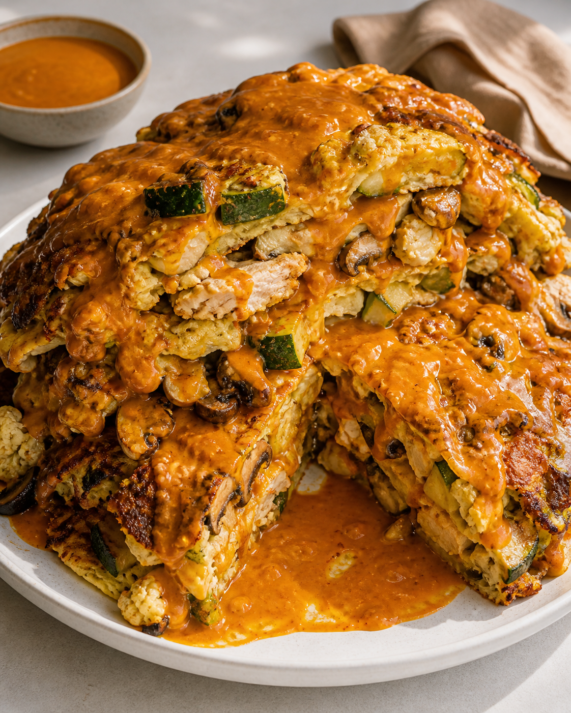
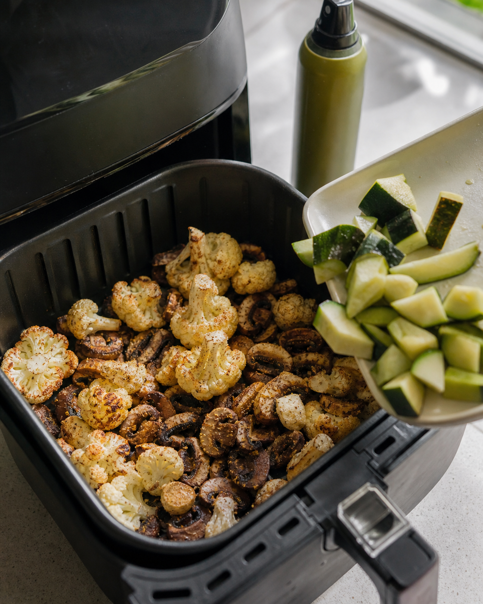
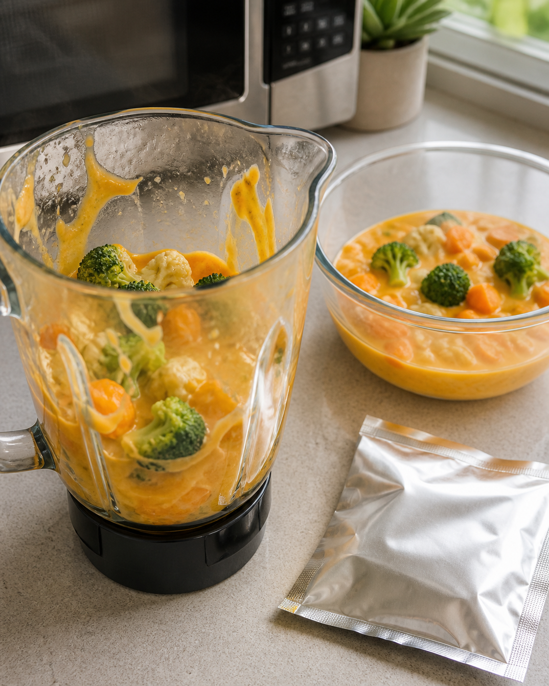
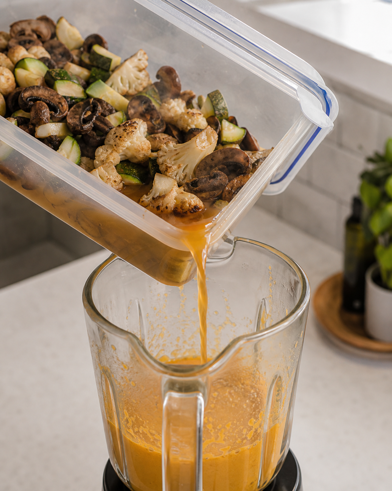
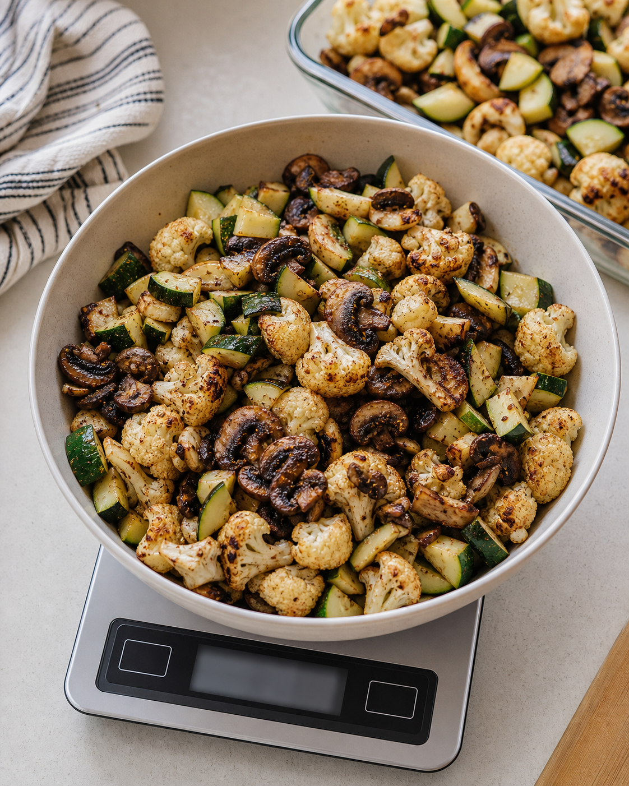
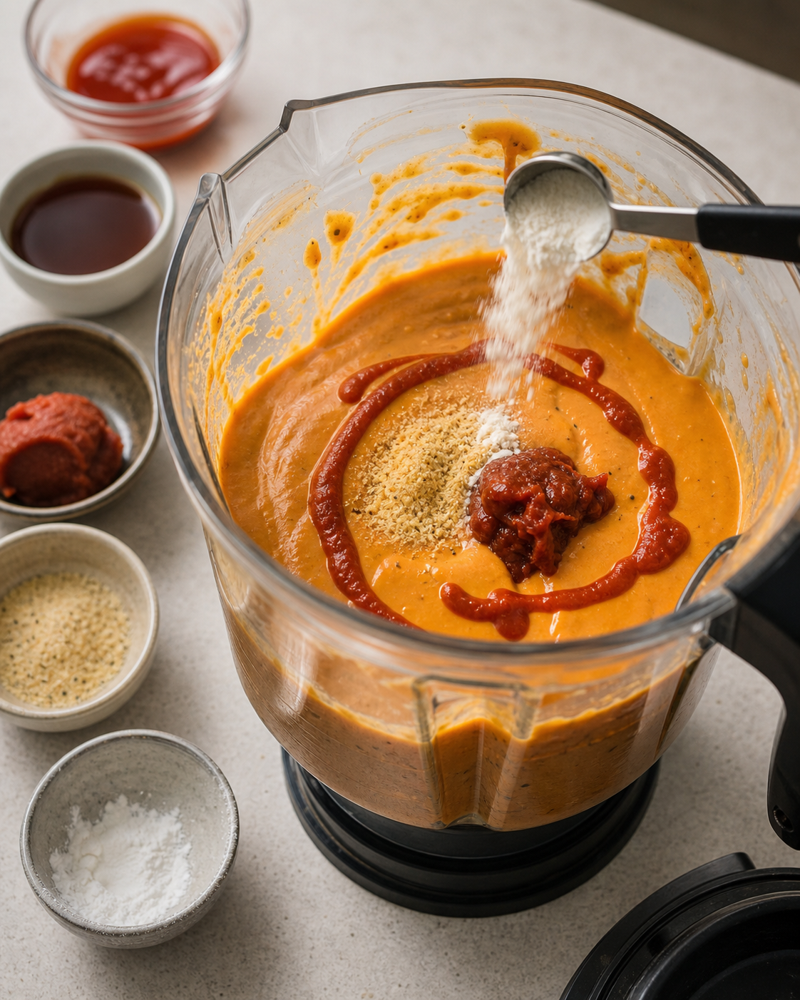
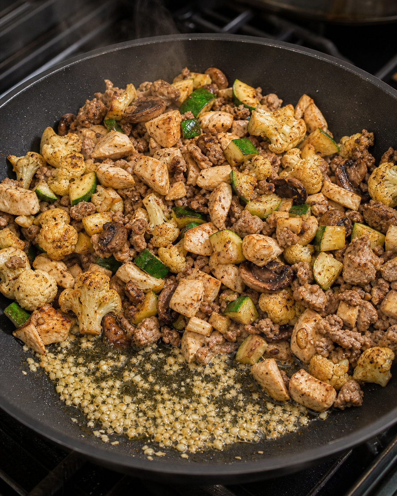
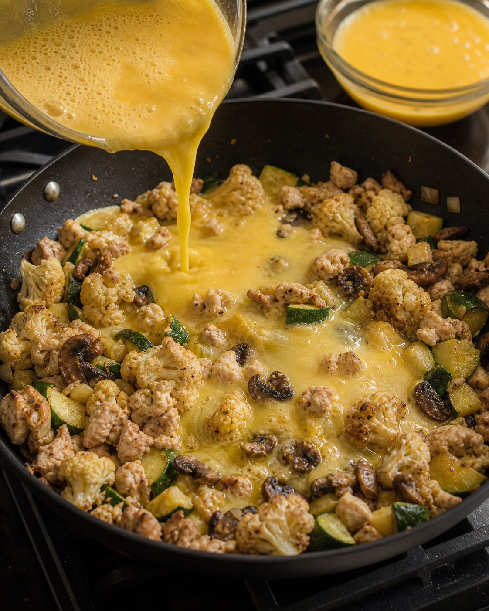
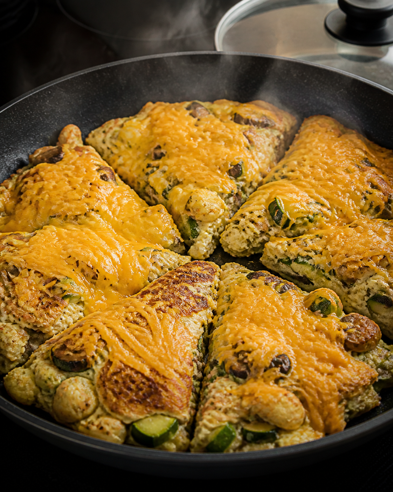

A five-pound-ish plate that eats like egg foo young crossed with a cheesy comfort food skillet. It is huge, salty, spicy, and actually filling.
Entire plate
~800 calories
Protein
~100g
Volume
Nearly 5 lb

Ingredients
Cook all the vegetables first, then use 1000g total cooked vegetables in the skillet. Save the rest for later.
Vegetables
3 bags frozen cauliflower
1 package mushrooms
1000g chopped zucchini
To taste garlic salt, garlic powder, onion powder, smoked paprika
Light spray calorie-free avocado oil spray
Protein
~300g total lean protein
Choose one chicken breast, sirloin steak, trout, ground turkey, or a mix
Eggs and Cheese
1 whole egg
275g egg whites
To top reduced-fat Velveeta shredded cheese
Sauce
1 packet Green Giant broccoli and cheese or cauliflower/broccoli/carrot cheese packet, about 110 cal
Use liquid drained vegetable liquid from cooked vegetables
To taste sriracha
A little red miso concentrate
To taste garlic salt
1-2g xanthan gum
Step-by-Step
The move is simple: roast a ridiculous amount of vegetables, steal their liquid for sauce, then set the whole skillet with eggs.

01
Air Fry Vegetables
Add cauliflower and mushrooms to the air fryer. Spray lightly and season with garlic salt and garlic powder. Chop zucchini, season it, then add it too. Cook 35-40 minutes, mixing several times, until soft and lightly charred.

02
Start Sauce Base
Microwave the vegetable cheese packet for about 6 minutes, then add it to a blender. This gives the sauce its cheesy base without blowing up the calories.

03
Drain Vegetable Liquid
Transfer cooked vegetables to a large container. Tilt the container with the lid cracked and pour the excess liquid into the blender. That liquid becomes the sauce base instead of watery garbage at the bottom of the plate.

04
Measure Vegetables
Weigh out 1000g cooked vegetables for the recipe. Save the rest for another bowl, skillet, or whatever you are eating later.

05
Finish Sauce
Add sriracha, a little miso, garlic salt, and 1-2g xanthan gum to the blender. Blend until smooth and thick. Xanthan gum is the thickener here, so go easy unless you want sauce paste.

06
Build Skillet
Heat a pan to medium-high, about 3/4 heat. Spray lightly, add minced garlic, then add the 1000g cooked vegetables and your lean protein. Mix it into one giant skillet.

07
Add Eggs
Mix 1 whole egg with 275g egg whites. Pour it over the pan, cover, and cook 1-2 minutes so the egg starts setting around the vegetables and protein.

08
Flip and Finish
Cut the skillet into sections and flip them. Top with reduced-fat Velveeta shredded cheese. Cover, turn the heat off, and let the carryover heat finish cooking everything.
09
Serve
Stack the sections on a plate and pour the thick sauce over the top. Massive portion. High protein. Actually filling.